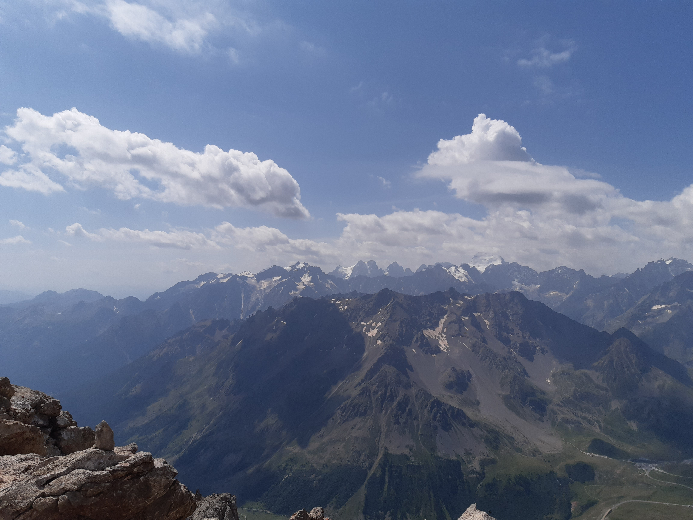

Description de l'itinéraire : plan Lachat - col de la Ponsonnière - grand Galibier
Distance : 19 km
Dénivelé positif : 1600 m
Point le plus bas : 1960 m
Point le plus haut : 3228 m
Cotation en l'absence de neige : T4
Intérêt : 5/5
Date : 12/8/2021
Photos :
Le grand GalibierLe lac de la PonsonnièreLe lac BlancLe massif des Écrins Vue du sommet, côté Sud : le massif des ÉcrinsVue du sommet, côté EstVue du sommet, côté Nord
Mont Thabor
Type : aller-retour
Description de l'itinéraire : la Chenalette - les Matonnes - refuge de Terre rouge - mont Thabor
Distance : 22 km
Dénivelé positif : 1600 m
Point le plus bas : 1745 m
Point le plus haut : 3178 m
Cotation en l'absence de neige : T4
Intérêt : 4/5
Date : 13/8/2021 et 14/8/2021 avec nuit au refuge de Terre rouge
Photos :
Vue du sommet, côté Sud-OuestVue du sommet, côté EstLa chapelle du Mont-Thabor
Les 3 lacs
Type : boucle
Description de l'itinéraire : plan Lachat - col de la Paré - col des Rochilles - lac du grand Ban - lac Rond - lac des Cerces - les Mottets
Distance : 11 km
Dénivelé positif : 100 m
Point le plus bas : 1960 m
Point le plus haut : 2574 m
Cotation en l'absence de neige : T2
Intérêt : 5/5
Date : 8/8/2021
Photos :
Le grand GalibierLes rochers de la grande ParéLe lac du grand Ban et le lac RondLe lac des Cerces